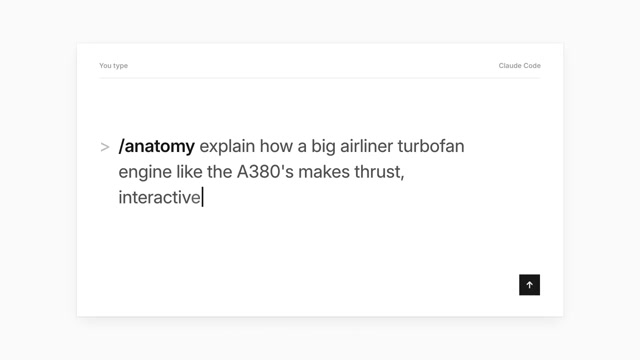
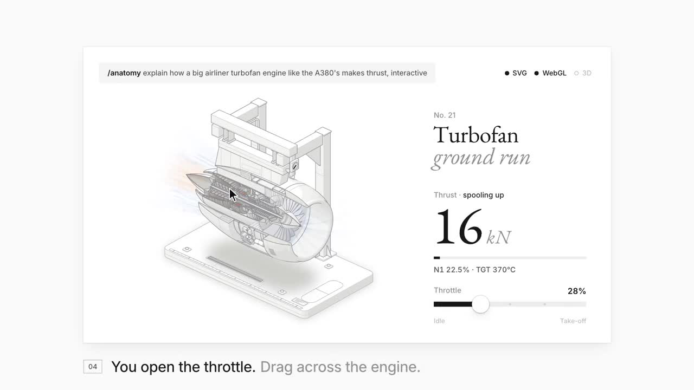
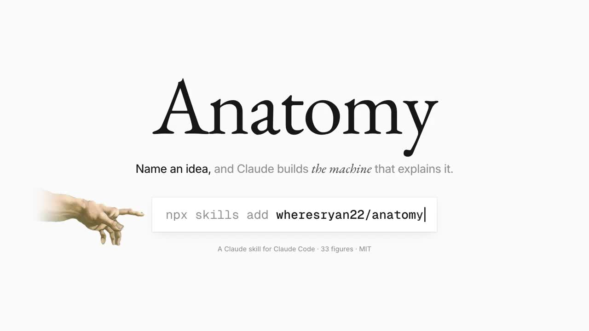
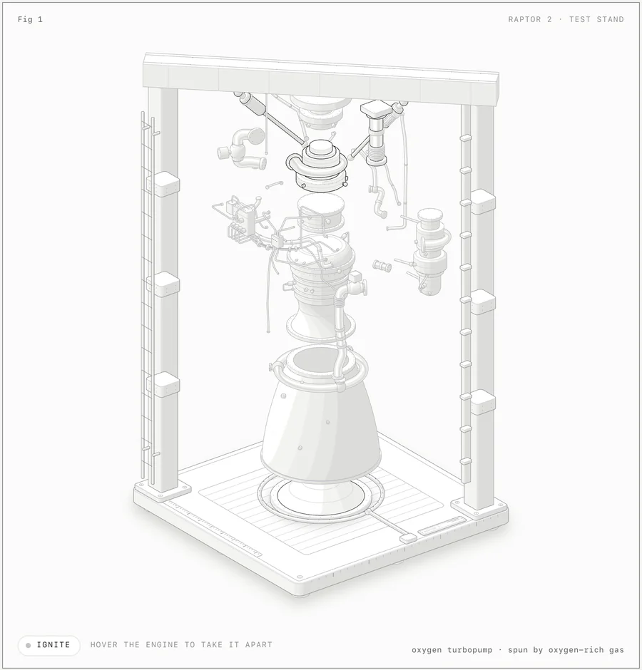
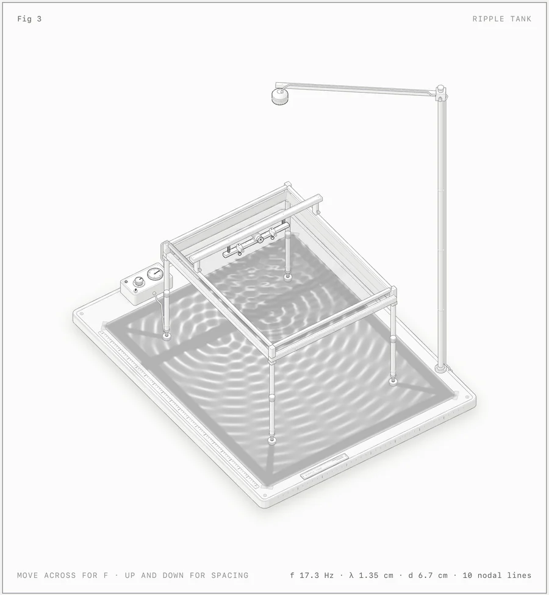
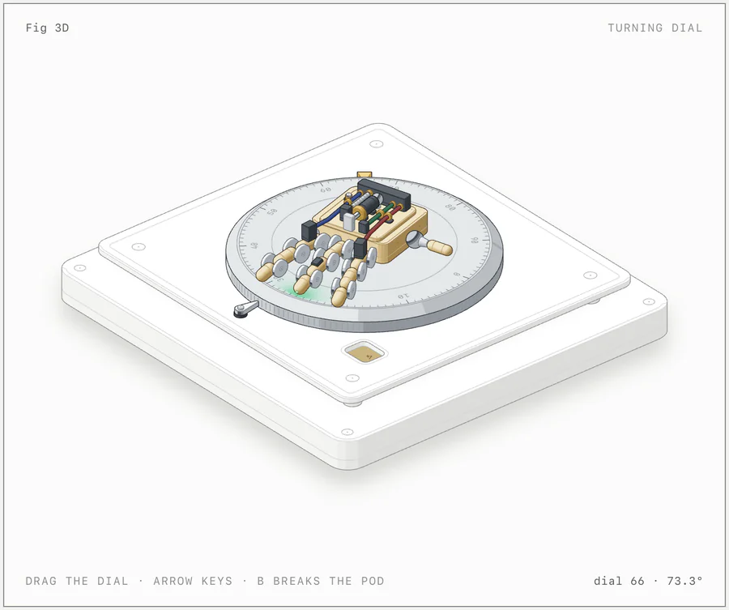
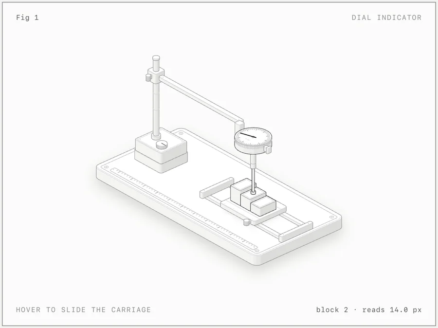

examples/raptor-engine，浅色主题，点火状态。发动机和试车台是 SVG，尾焰是同一等轴测相机里的 WebGL 着色器。发布帖
隆重介绍 Anatomy
用一句话描述一台机器，Claude 就让它活过来。
· 可交互的等轴测线框图，能旋转、细看、探索
· 用 WebGL 着色器画火焰、水、等离子体等
· 真正的 3D 运动，单个零件可以转动、移动
以 Agent Skill 形式安装。完全开源。
帖子附一段约 39 秒的演示视频。下面是视频截帧：输入 /anatomy explain how a big airliner turbofan engine like the A380's makes thrust, interactive，Claude 画出“涡扇发动机地面试车”图，拖动就能推油门，读数随之变化。



Anatomy 是什么
这个 Claude Skill 解释一个想法的办法，是把它造成一件真实、能运转的物体。它画的是精心制作、可交互的等轴测图，由许多精确的小零件组成，输出为 SVG、WebGL 和 3D。
你让 Claude 画一张解释某个技术概念的图，Anatomy 会让它发明一件实物，这件实物的运转方式就是这个概念。比如，“没变化时就跳过工作”的缓存键，变成一把只有所有弹子都对齐才能转动的弹子锁。一个 GPU 上下文服务多块画布，变成一台龙门绘图仪，唯一的打印头依次走访 16 个孔位。
接着，Claude 用几十个小而实、有明暗的零件把这件东西搭出来，放进一张带标题、提示和实时读数的图卡，让它随指针和键盘平稳地动起来，再逐个放大每个接缝来检查自己的成果。图上显示的每个数字，都来自驱动零件运动的同一个小模型。
快速上手
npx skills add wheresryan22/anatomy -g -a claude-code然后在 Claude Code 里输入：
/anatomy explain how a token bucket rate limiter works, interactive就这么简单。不需要 API key，也不用 npm install：这套工具只用 Node 的内置模块。
图库




每张截图都是 examples/ 里某个页面的浅色主题，用这个 Skill 自带的 scripts/capture.mjs 和 scripts/drive.mjs 截取。构建好的页面已经提交进仓库，打开 examples/ 里任意 .html 就能试。
能做什么
三类图，共用一套工具、一个相机、一套工艺规则。
| 类型 | 说明 | 示例 |
|---|---|---|
| SVG | 核心。四色调明暗的实心等轴测零件，从后往前绘制，放在带实时读数和缓动动画的图卡里。可以输出独立 HTML 页面、内嵌样式的单个 .svg 文件，或 React/Next.js 组件。 | dial-indicator、desk-computer、arcade-cabinet、test-rig |
| SVG + WebGL | 用来画线条画不出的东西：火、尾气、水、焦散、灯光、辉光、蒸汽。着色器跑在前后两层 SVG 之间的 canvas 里，用的是图本身的等轴测相机，所以融在画面中。没有 WebGL 时，SVG 照样能看。 | raptor-engine、ripple-tank |
| 3D（beta） | 能真正 3D 转动的零件：会转的表盘或转台、能弯的手指、断开后掉落的部件。运动零件每帧按工具的规则重新投影、着色，其余部分保持静态。 | turning-dial |
每张图可以是浅色或深色。浅色是这个 Skill 优先设计的主题，着色器也一样。
安装
Anatomy 是标准的 Agent Skill：一个根目录下有 SKILL.md 的文件夹，这个仓库就是那个文件夹。安装方式任选一种：
- skills CLI，装给自己：
npx skills add wheresryan22/anatomy -g -a claude-code→~/.claude/skills/anatomy - skills CLI，装进单个项目：
npx skills add wheresryan22/anatomy→.claude/skills/anatomy - git，装给自己：
git clone https://github.com/wheresryan22/anatomy.git ~/.claude/skills/anatomy - git，装进单个项目：
git clone https://github.com/wheresryan22/anatomy.git .claude/skills/anatomy - 直接下载：下载 ZIP 解压，把
anatomy-main改名为anatomy，放进~/.claude/skills/
skills CLI 会复制整个仓库，示例也在内（约 10 MB），而且要求较新的 Node.js：CLI 1.7.1 版需要 22.20 或更高。用 git 装进项目时，记得提交 .claude/skills/anatomy，团队成员就能一起用，以后在该目录里 git pull 即可更新。Claude Code 会在运行中的会话里识别新 Skill。如果会话开始时 skills 文件夹本身还不存在，运行 /reload-skills。
用法
输入 /anatomy，再说明这张图要解释什么。不点名这个 Skill 也行：只要你要的是等轴测插图、文档/博客/落地页的解释图，或者交互式讲解，Claude 都会加载它。更多提示词示例（来自仓库的 evals）：
/anatomy a figure for our Next.js docs on database connection pooling: a pool of 10 connections, requests borrow one and give it back, and when all 10 are busy new requests wait in a queue. A React component plus a static HTML preview, dark theme.
/anatomy an isometric SVG explaining how a CDN edge cache works, cache hit vs miss, TTL of 60 s, for a dark landing page. Just the SVG file and a PNG preview.
/anatomy a Bunsen burner on a lab bench: opening the air collar turns the lazy yellow flame into a roaring blue cone. WebGL for the flame, one HTML file, dark theme.想得到最好的图，有三个习惯：
- 说出想法，而不是画法。讲清楚要解释什么，并给出真实数字（尺寸、数量、速率、阈值）。发明那件实物是 Anatomy 的主要工作，它做得比“方框加箭头”式的描述更好。
- 或者直接点名实物。如果你心里已经有了那台机器（意式咖啡机、本生灯、锁），就直接说，并说明哪些部分要动。
- 说清用在哪里。独立 HTML 页面、单个 SVG 文件，还是 React/Next.js 组件；浅色还是深色。不同输出的构建方式不一样。
交付的图是归你所有的源码：一个 Node 构建脚本和它生成的页面。如果是 React，则是几何模块、一个负责静态图的服务端组件，加一个负责动效的客户端组件。工具包会一并附上。
示例
每个不依赖框架的示例都有 Node 构建脚本，在旁边生成独立页面，加 --light 就是浅色主题。
- dial-indicator：支架上的百分表，下面是一排量块。最小的示例，约 300 行。
- desk-computer：1984 年风格的台式电脑，键盘可以打字，字显示在机身正面平面里画出的 CRT 上；关机时画面收成一条线、再缩成一个点。约 85 个实体。
- arcade-cabinet：拆掉侧板的街机柜。投进一枚硬币，它会滚下投币槽，经过投币开关线落进钱箱；一个脉冲沿线缆传到主板，CRT 预热后进入演示模式。约 240 个实体、15 根线缆。
- raptor-engine：试车台上的 Raptor 2 发动机，可拆成 11 个组件；WebGL 尾焰、激波、溅射和蒸汽渲染在前后两层 SVG 之间。它是密集管路、平滑明暗、淡入淡出和审计的参考范例，构建要几分钟。
- ripple-tank：立在高脚上的学校波纹水槽，下面是纸屏，从 44° 仰角观看。两层 WebGL 对齐到等轴测平面，由
model.mjs里的纯模型驱动。 - test-rig：来自某个 React/Next.js 站点的生产级图：弹簧滑台上的玻璃按钮、导轨上的手指探头、读出倾斜量的百分表。53 个实体。没有构建脚本，直接复制进 React 应用。
- spot-plate：同一站点的第二张图：点滴板上六对玻璃液滴，随着一排塞尺张开融成一块玻璃。每对液滴由一个距离场绘出。没有构建脚本。
- turning-dial：3D 模式。一个能真正 3D 转动的密码盘，上面有一只小机械手，还有能抬起的三关节手指和一个会断开、自由下落的部件。
stress.mjs是放在杂乱工作间里的 380 零件机械手，用来测性能。
对 raptor-engine 和 arcade-cabinet 运行 build.mjs --audit、对 turning-dial 运行 build.mjs --light --audit，还会执行几何审计。3D 审计比较慢。
工作原理
- SKILL.md 是 Claude 读的文件。它规定了工作流：先收集真实数字，发明实物，写零件清单，规划场景，用工具包一次建好几何，从后往前绘制，加框，让它动起来，最后像评论家一样验收。它也收录了精简版工艺规则。
- kit/ 是绘图库：等轴测相机、实体与零件库（
iso-kit）、任意轴的回转件（lathe.mjs）、管道与线缆（tube.mjs）、WebGL 层（gl.mjs）、3D 运行时（turn*.mjs）和 React 组件。除了 React 组件需要 React，没有其他依赖。 - references/ 是 Claude 按需打开的长篇指南：工艺、工具包 API、动效、React、验证、WebGL、设计演练和 3D 模式。
- 验证：
kit/audit.mjs证明几何正确，即没有东西互相穿插、每个端点都落在支点上、每处重叠都按深度顺序绘制。在无头 Chrome 里，capture.mjs和drive.mjs负责截图、特写和慢放联系表，lines.mjs揪出悬空结束的线，turn-check.mjs检查 3D 图。Skill 要求 Claude 读一遍它生成的每张 PNG。
环境要求
- Claude Code：全部功能都需要，这个 Skill 就是为它写的。
- Node.js 20.10+：构建、工具包和检查都要用。只用内置模块，无需
npm install。示例在 Node 20.19 和 22.11 上都逐字节重建过；在 Node 20 上，浏览器脚本会自动带--experimental-websocket重启。 - Chrome 或 Chromium：检查脚本需要。会自动在 macOS/Linux/Windows 常见位置和 Playwright 缓存里找，其他路径用
CHROME_PATH指定，以开启 WebGL 的无头模式运行。 - React 18+：只在输出 React 时需要。
局限
- 它不是图表库。没有坐标轴、数据系列或数据图。数字只以两种形式出现：模型驱动的实时读数，以及零件的真实尺寸和数量。
- 它画机器、仪器、工具和家具。不画人，也不画精确地图。没有机械结构可造的想法，画出来效果会差一些。
- 它故意很慢。一张图要花很长时间：零件清单、几何、审计，以及两种主题下每个接缝的特写。Raptor 构建要几分钟，30 个零件的完整 3D 环绕审计要 15 到 20 分钟。
- 着色器需要 WebGL。没有 WebGL 时 SVG 照样能看；开启“减少动态效果”时，所有图都会静止。
3D 模式仍是 beta。它只在自带示例和一张测试图上验证过，还没用于生产级图。小型 3D 图能跑 60 fps；380 零件的压力测试机械手在一台高负载机器上测得：1440 px 宽约 20 fps，限速手机配置下 13 到 15 fps。
欢迎提 Issue 和 PR，提交前请先读 CONTRIBUTING.md。其中的规矩包括：代码里不写注释；改动工具包时，所有现有示例的输出必须逐字节不变。许可证：MIT © 2026 Ryan · @wheresryan22。